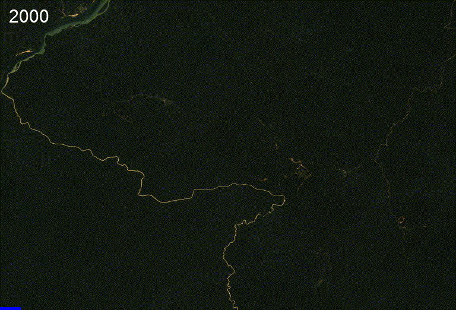

Satellites + machine learning in journalism: best examples
The combination of satellite imagery with machine learning (ML), a branch of artificial intelligence (AI), enables something unimaginable not long ago: training an algorithm to process big geographic data in search of patterns, specific details or changes over time.
It is a methodology that produces valuable information and has revolutionised fields such as agriculture, international trade and the battle against climate change, but until now it has been little used in journalism.
Since the 2018 publication of Leprosy of the land, the first journalistic investigation to use this technique to show the environmental impact of illegal amber mining in Ukraine, there have been only a handful of similar stories.
"There is a lack of understanding of what we could do with satellite imageries and AI in the newsroom," says Mathias Felipe de Lima Santos, project manager of data-driven projects at InfoAmazonia and researcher in the Digital Media and Observatory at the Federal University of São Paulo (Unifesp).
He points to four reasons that hinder the adoption of this technology even among large media outlets:
- Very few journalists have technical knowledge about AI
- Media usually do not have the infrastructure (computer power) to process large amounts of data
- Free satellite imagery cannot identify smaller details because of its low resolution
- Commercially available high-resolution imagery is very expensive
"That's why collaboration is very important and it's a way of addressing these issues," adds Mathias, who believes that partnerships with civil society organisations and the private sector can help "to produce research that goes beyond the limitations of newsroom".
The following examples show that, when these difficulties are overcome, the results are encouraging. All of these works tackle environmental issues, a hot topic in journalism, and as these tools become more accessible it is to be expected that more and more similar investigations will be undertaken.
Leprosy of the land, where it all began
From 2010 the rise in the international price of amber triggered a mining rush in north-western Ukraine, country with the second largest amber reserves in the world. In a context of low salaries and few opportunities, thousands of informal workers turned to illegal mining, controlled by mafia groups.
The amber deposits are found under the forests, and to access them, trees are cut down and pits are dug where pressurised water is pumped in. The result is an environmental disaster with a very clear pattern from above: whole areas of forest transformed into a grey, pitted, lunar desert.
By 2018, the amber situation in Ukraine was long known to journalists, but there was no data on its extent. "Before us no one could say what was the scale of this problem," says Anatoly Bondarenko, data editor of Texty, the Ukrainian agency that investigated the issue.
Inspired by a now defunct university project called Terrapattern, Bondarenko and his team designed an algorithm to identify traces of illegal mining in satellite imagery obtained via the Bing Maps API. It was a big challenge for a small newsroom, only possible thanks to the initial collaboration of 20 volunteers who identified some 50 mining sites during an Open Data Day.
These first images were used to train the model, which was then applied to a territory of 70,000 km2. The map created by Texty with the results showed that more than 1,000 ha of forest had been affected.
"It was an unusual project, because we did it quite fast. We started, did some prototypes and published it a few weeks later. It was a really interesting project, I liked to work on it so much", recalls Anatoly.
"Unfortunately, we sent our results to different governmental structures and we organised a couple of press conferences, but nothing was done." Illegal mining eventually declined, not because the government fought it, but because amber prices fell and the activity became less lucrative.
The Leprosy of the Earth was a groundbreaking story that demonstrated a powerful new research tool. Nominated for the Prix Europa 2018 awards and winner of an SND 2018 award, it is already a classic of data journalism.
Gold, guns and drugs in the deep Amazon
The Amazon also faces the ravages of open-pit mining, but for gold. The lungs of the planet suffer twice: deforestation plus water pollution, because mining takes place around rivers, polluting them with sediment and heavy metals such as mercury.
Earthrise Media is a digital agency created by data scientists, specialised in environmental investigations through analysis of satellite imagery. For several years they have been investigating the Amazon and collaborating with different media, using the power of AI to observe the region from the sky.
As a result of this collaborative work, in 2021 InfoAmazonia published The pollution of illegal gold mining in the Tapajós River, which reveals the expansion of mining in the region of Pará, Brazil.
The algorithm, based on Sentinel-2 imagery, detected 4700 mining points compared to 2700 in 2016 - a growth of almost 75%. In the mined areas, where there used to be trees, there are now only pools full of toxic water.
The investigation also showed how the sediments produced by the activity spread over 500km, turning the rivers bright yellow in satellite images.
But the problems in the Amazon go beyond mining: in the Venezuelan jungle there is also drug trafficking and the presence of guerrilla groups.
Corredor Furtivo is an investigation published in early 2022 by Armando.info and El País that took a year of work and was based on the Earthrise algorithm to identify 3700 mining points in the south of Venezuela - the vast majority illegal - and dozens of clandestine airstrips. These are the airstrips used by organised crime to transport not only gold but also drugs across the borders with Colombia and Brazil.
The satellites provided evidence of what indigenous communities had been claiming for years: pollution in areas where mining is prohibited by law and the presence of heavily armed groups that "enslave men, women and children" by committing "selective murders" against the communities.
Computing power made it possible to systematise what would have taken much longer to report by traditional means only, in a remote, isolated and dangerous jungle area. In fact, journalists covering the story from the ground used strict security protocols and were forced to change their plans when the armed groups found out they were there.
An algorithm to monitor it all
In April this year, Earthrise and the Pulitzer Center's Rainforest Investigations Network launched Amazon Mining Watch, their most ambitious project, which summarises their years of work in the largest rainforest on Earth. It is an interactive map showing the impact of gold mining on the entire Amazon, some 6.7 million square kilometres spread over nine different countries.
Every four months, the algorithm performs 326 million calculations to process the updated Sentinel-2 satellite images, with a resolution of 10m per pixel, using cloud-free images only. But the final map is built with high-resolution Mapbox imagery (less than 1m per pixel), allowing journalists, activists and citizens to access detailed and very recent information on mining activities.
Amazon Mining Watch is based on an open source convolutional neural network, which processes 440m sided terrain tiles and achieves an accuracy of 98.2%. For every 500 mine detections, there are only about nine misclassifications.
"It went relatively quickly over - says Edward Boyda, journalist, physicist and managing partner at Earthrise about the creation of the algorithm - Probably about a month of effort, but it leans really heavily on previous work that we had done for years and that we were able to transfer to that purpose". Part of that previous work was an exhaustive initial manual identification of some affected sectors, which was necessary to train the model.
Adapting the same algorithm to another context, Earthrise teamed up with the Australian Mineroo Foundation to create another platform, Global Plastic Watch, which detects plastic landfills and establishes their risk rates in more than 60 countries around the world.
Looking for needles in a haystack -or how to map Argentina's solar farms
Satellite imagery is not just for revealing environmental abuses; it can also help in the classic watchdog role of journalism.
In 2020, LN Data, the data team of the Argentinean newspaper La Nación, used this technology to track the construction of solar farms across the country and verify that the government was fulfilling its commitments. A daunting task, given that Argentina is the eighth largest country in the world.
To develop the project, LN Data partnered with Dymaxion Labs, a startup specialising in geospatial data processing. Using cloud computing, they created and trained a model that processed 7 million images from ESA's Sentinel-2 satellite.
The algorithm correctly detected 20 of the 24 officially tendered solar farms and also discovered two other private facilities. A demonstration of how AI can find a needle (or several needles) in a haystack.
As solar farms are similar in structure and shape to agricultural farms, the algorithm relied on infrared bands to differentiate between them.
But it is key to keep in mind that no technology is magic, nor does it replace traditional reporting. "When you find something, you need to go and investigate that," says Mathias, who was involved in the investigation.
"We finished the project and these solar parks seemed to be, more or less, at the same level as the government's proposal. But when another journalist investigated in deep about some of the solar farms, she found out that they were built but not actually working".
The company had delivered the projects on time but the government had problems connecting these stations to the national grid. And that was not something that could be detected from the sky.
- ***